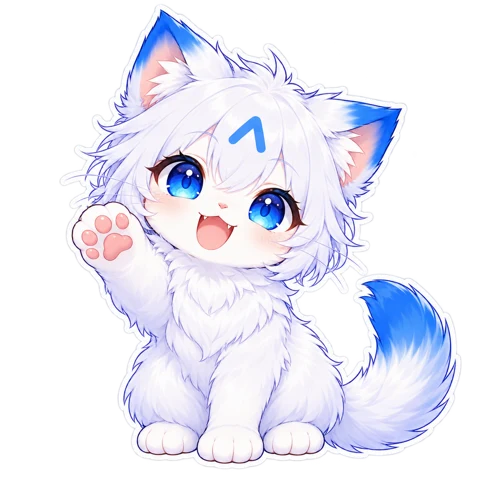

작은 표정으로 전하는 커다란 마음
오늘의 마음,
어떤 표정인가요?
반짝이는 키라쨩과 포근한 픽셀.
말 대신 보내고 싶은 순간들을 모았어요.
40개의 이미지2명의 친구15가지 감정·상황
마음 고르러 가기 ↗
안녕, 반가워!안냥 ♡PICK YOUR MOOD
마음을 골라보세요
이미지를 불러오고 있어요
찾는 표정이 없어요. 검색어나 감정을 바꿔보세요.
작은 표정으로 전하는 커다란 마음
반짝이는 키라쨩과 포근한 픽셀.
말 대신 보내고 싶은 순간들을 모았어요.

안녕, 반가워!안냥 ♡PICK YOUR MOOD
이미지를 불러오고 있어요
찾는 표정이 없어요. 검색어나 감정을 바꿔보세요.